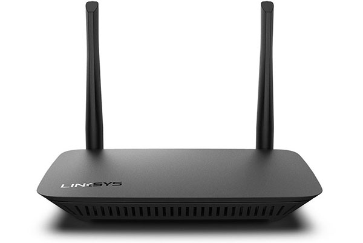

Componentes Activos:
Listado de componentes
Switch
Dispositivo que conecta múltiples dispositivos dentro de una red, gestionando el tráfico de datos.

Router
Dispositivo que dirige el tráfico entre diferentes redes y proporciona acceso a internet.

Tarjeta de red (NIC)
Componente que permite la conexión de un dispositivo a la red.

Interruptor inteligente Wifi
Dispositivo que permite controlar dispositivos eléctricos a través de una red inalámbrica.

Access Point
Dispositivo que extiende la cobertura de una red inalámbrica.